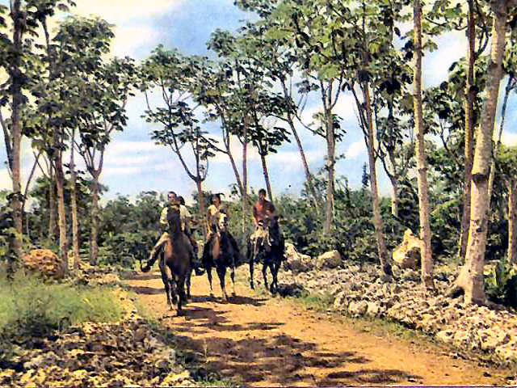
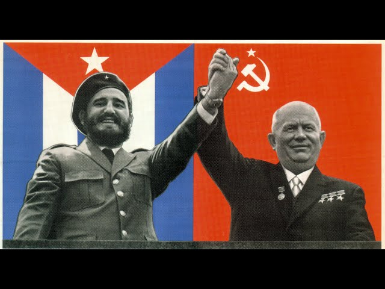

ИСТОРИЯ
История Кубы окутана мифами и героическими легендами. Прошлое этого государства все еще живо и напоминает о себе социалистическими реалиями настоящего, огромным количеством сувениров с изображением Эрнесто Че Гевары, памятниками в честь защитников революции и особой атмосферой, царящей в городах и на курортах Острова Свободы.
Корни борьбы за независимость уходят еще вглубь веков, когда высадившийся в восточной части архипелага в 15 веке Колумб открыл новые земли, а папа Александр VI передал их Испании. Местное население, индейцы, автоматически становились собственностью колонизаторов, так как в силу культурных различий между народами воспринимались испанцами даже не как люди. И это при том, что тогдашние кубинцы были одним из самых развитых племен Антильских островов, с высокоразвитым искусством и собственным ритмом жизни. Сломить дух индейцев не получилось: рабами они стать не смогли и либо умирали в резервациях, либо уходили в горы. В итоге к середине 16 века от коренного населения практически ничего не осталось.
Любимые всеми детьми пираты были неотъемлемой составляющей Карибского моря того времени. Легендарные Генри Морган, Дрейк и многие другие разбойники грабили испанские корабли и даже пытались захватить некоторые прибрежные кубинские города.
Достаточно длительное время Куба существовала в качестве одной из многочисленных испанских колоний. Важнейшим портом была Гавана. Однако пламя подавленных индейских восстаний вскоре снова вспыхнуло, но уже среди сильно видоизменившихся коренных жителей. В конце 19 века разгорелась борьба против испанского гнета. Поскольку кубинцы были слишком слабы для открытого противостояния такому сильному противнику, то в качестве союзника было привлечено другое государство — США. Плата за освобождение была слишком высока. Американцы фактически подчинили местные территории, захватив власть. Но и здесь стойкий кубинский народ не сдался. Начался новый период борьбы. Именно в это время, в 50-60-х годах 20 века впервые и прозвучали имена Фидель Кастро и Че Гевара. Революционные лидеры привели страну к победе. Как это часто случается, после окончания военных действий наступает мирное время, время компромиссов и политиков, а не отчаянных повстанцев. Товарищ Че, ставший на тот момент всенародным любимцем, это понял и, отказавшись от всех своих постов, разочаровавшись в идеалах, ушел воевать в джунгли, где трагически погиб.
Дальнейшая история Кубы была связана с так называемыми странами социалистического лагеря. СССР был главным союзником. Перестройка и 90-е года изменили геополитическую ситуацию, только Остров Свободы как будто бы застыл во времени и продолжает жить по законам, которые для новых поколений, отказавшихся от коммунизма, стран кажутся чем-то далеким и не вполне понятным.